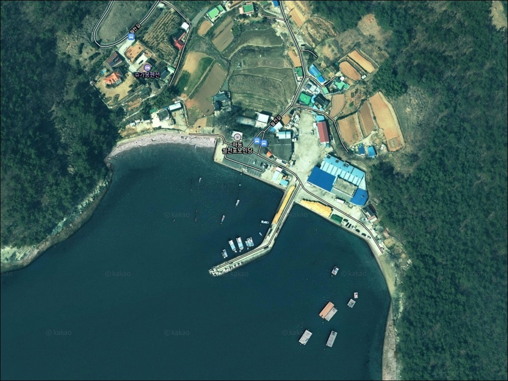
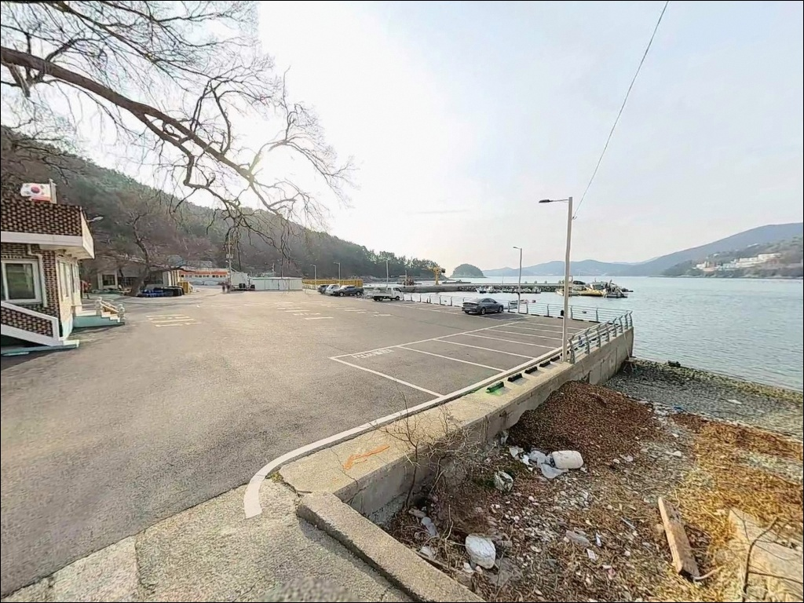
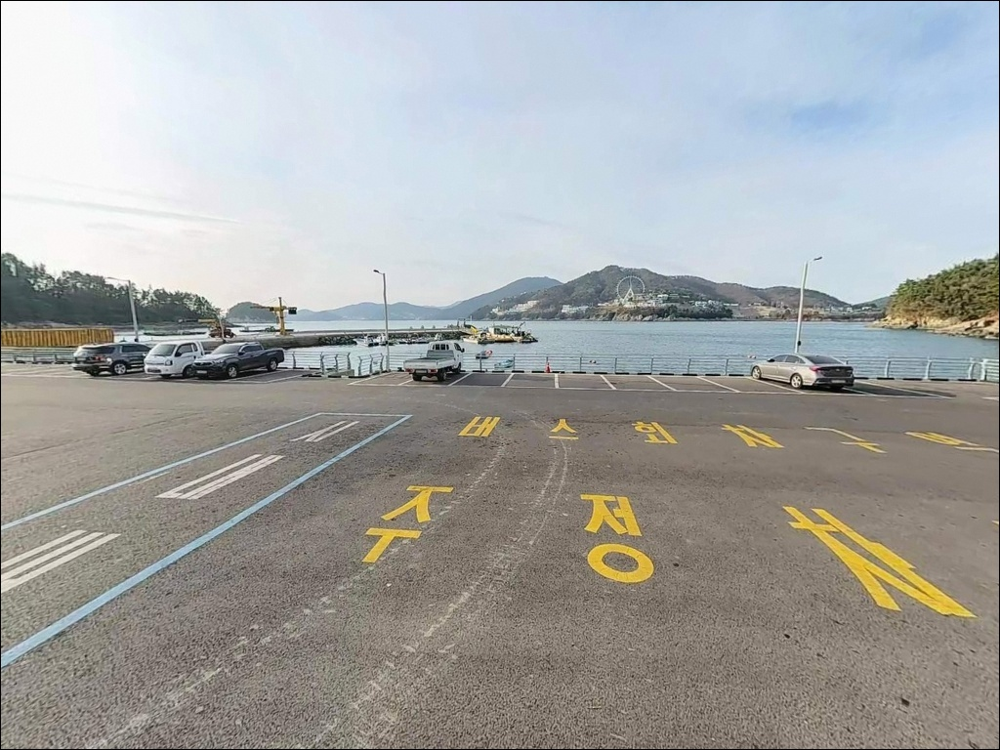
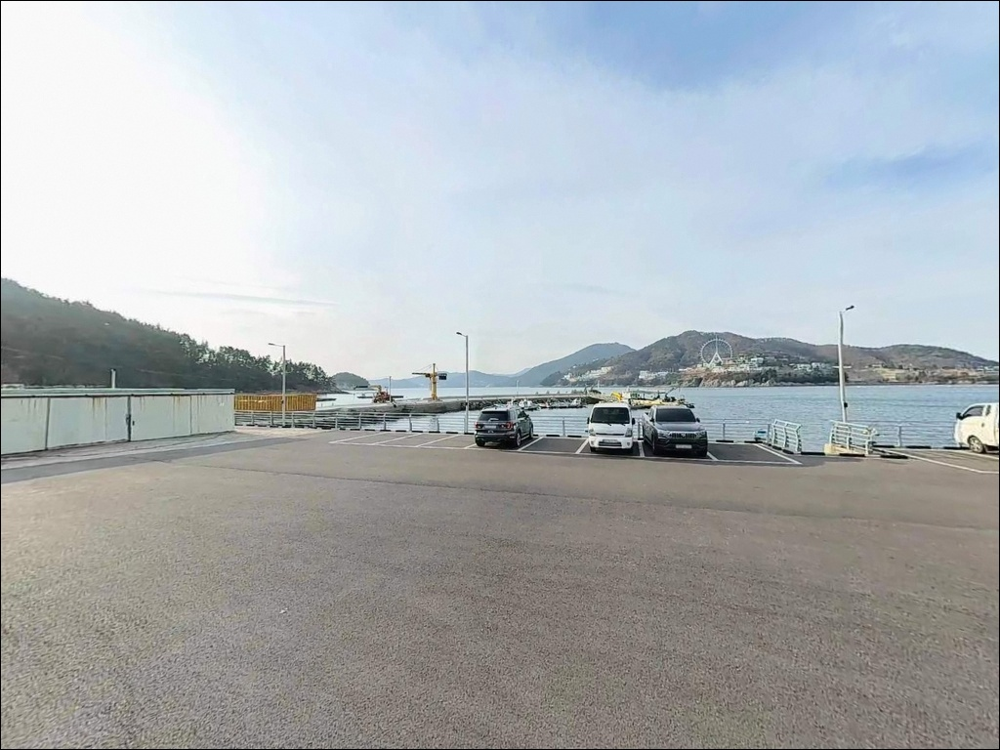
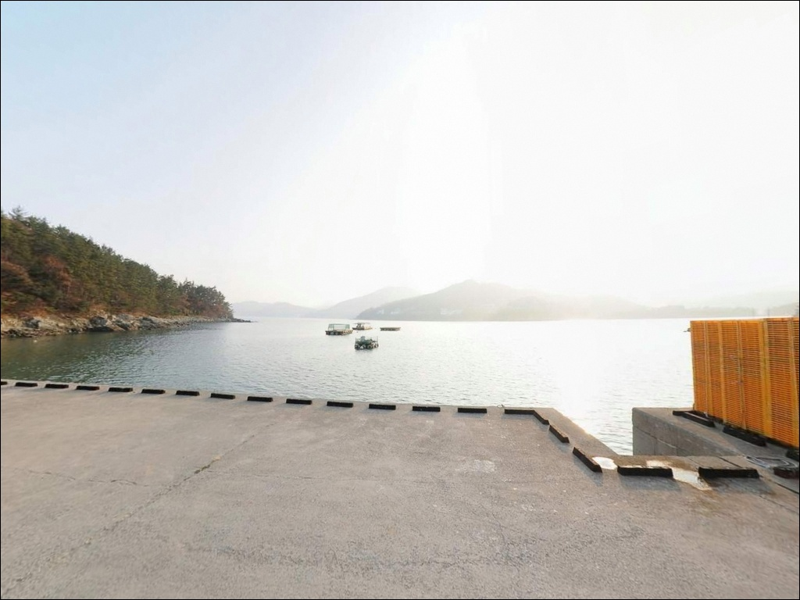
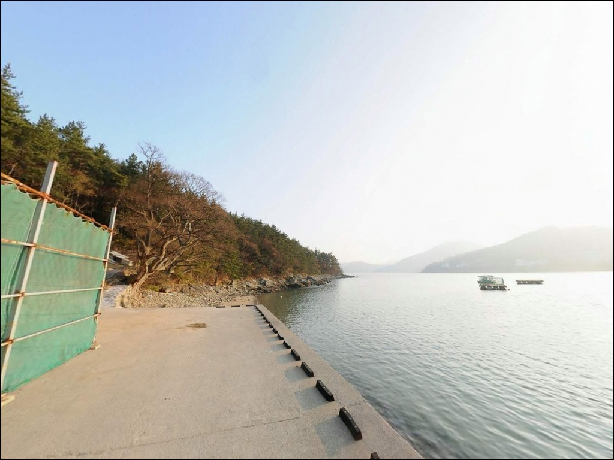
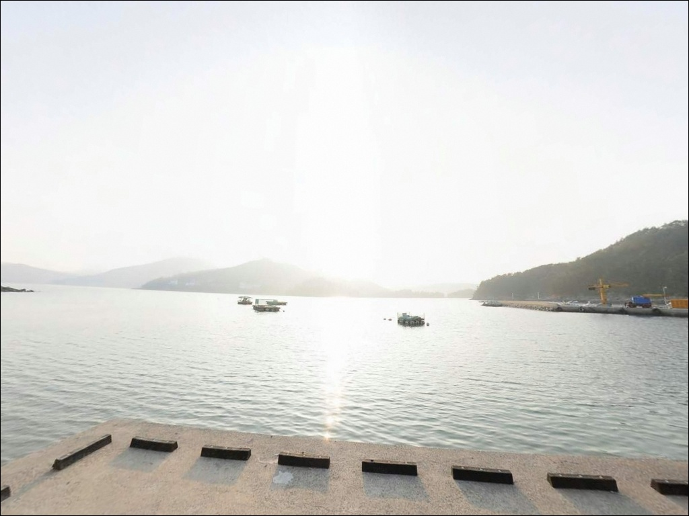
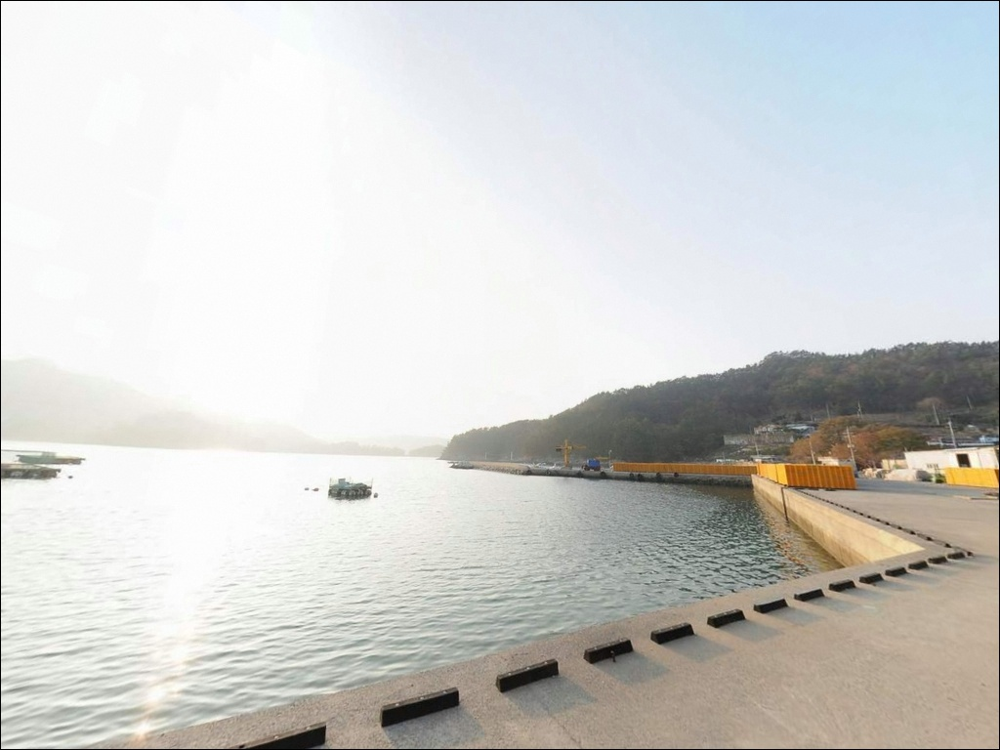
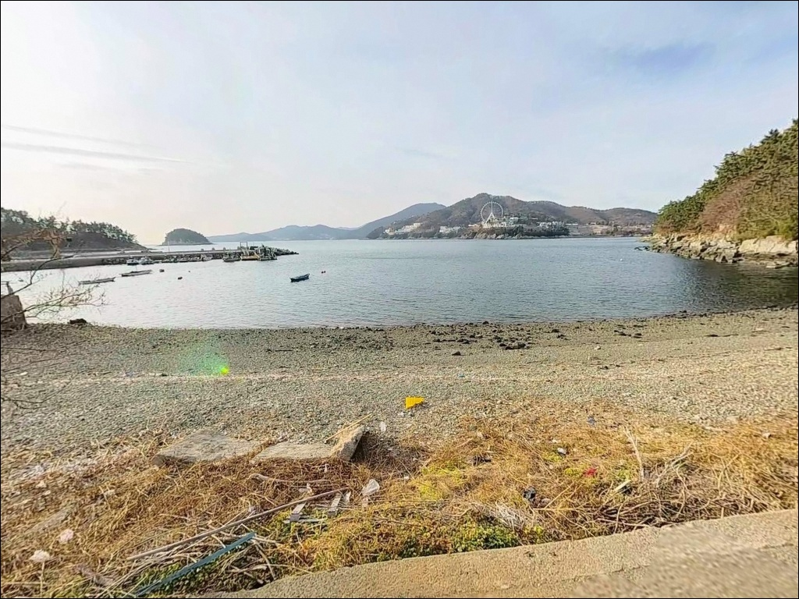

이 페이지에는 광고(제휴 링크 포함)가 있으며, 광고 링크를 통해 구매하면 운영자가 판매 수익 또는 수수료를 받을 수 있습니다. 포인트 사진: 카카오맵 스카이뷰·로드뷰. 이 페이지의 지도·사진 이미지는 카카오맵의 실제 서비스 이미지와 다를 수 있습니다.

월전방파제
전남 여수시 돌산읍 우두리 59-1
월전방파제를 처음 찾는 낚시인이
가장 많이 틀리는 판단이 하나 있습니다.
전체 수심이 얕다는 정보만 보고
어디서나 채비를 던지는 방식입니다.
이 포인트는 방파제 끝단 외항 방향에서만
수심이 확보되는 구조로,
자리 선택이 조과의 전부를 결정합니다.
돌산대교를 건너 북단 우두리 해안에
자리한 월전방파제는
여수 내만 수역을 면하는 소규모 어촌정주어항입니다.
외해 파도의 직접적인 영향은 차단되는 구조이며,
방파제 주변으로 도보 접근이 가능한
갯바위(문여 방향)까지 함께 형성되어 있어
공략 선택지가 복수로 갖춰집니다.
이 글은 월전방파제의
진입 동선, 낚시 지형 분석,
낚시 스타일별 공략 조건, 차박 여건에 집중합니다.
조황 단정이나 특정 어종 보장은
이 글의 범위에 포함되지 않습니다.

월전방파제가 위치한 우두리는
돌산대교 또는 거북선대교를 건너
돌산로를 따라 북단 해안 방향으로 진입하면
방파제까지 차량이 닿는 구조입니다.
진입로는 포장도로가 방파제 직전까지 연결되어 있어
진입 난이도는 낮은 편입니다.
선착장 앞 공터 구조로 회차가 가능하며,
소형 차량부터 중형 SUV 수준까지는
진입과 이탈에 큰 문제가 없습니다.
대형 장비를 적재한 차량이라면
출발 전 위성지도로 방파제 입구 구간을
미리 확인해 두는 편이 좋습니다.
주차는 방파제 입구 공터와
선착장 앞 빈 공간을 활용하는 방식이 기본입니다.
어선 이동 동선을 막지 않는 자리를 먼저 잡고,
차단봉이 설치된 경우 지정 구역 외에는
차량을 진입시키지 않는 것이 기본 매너입니다.

우두리는 돌산도에서 개발 밀도가 가장 높은
신시가지 구역입니다.
아파트 단지와 관공서, 상업시설이
방파제 인근까지 인접해 있어
야간에도 가로등 조명이 충분한 환경입니다.
헤드랜턴 없이도 기본 시야 확보가 가능한 구간이지만,
방파제 끝단 쪽은 개인 조명을 반드시 챙겨야 합니다.
차박을 메인 목적으로 방문하기에는
민가 밀집도가 높아
프라이버시 확보가 어렵습니다.
낚시를 마친 뒤 당일 귀가하는 패턴이거나,
가벼운 체류 목적이라면
선착장 공터를 활용하는 방식이 현실적입니다.
조용한 노지 차박을 원한다면
이 포인트보다 남쪽의 대안을 먼저 검토하는 편이 좋습니다.
내만 구조상 외해 파도의 직접 영향은 차단되어
파도 소음은 크지 않습니다.
다만 바람 방향에 따라
외항 쪽 노출이 생기는 경우가 있으므로
출발 전 기상 예보 확인은 기본입니다.

월전방파제의 가장 큰 실용적 장점은
편의시설 접근성입니다.
우두리 신시가지 내에
편의점, 마트(하나로마트), 식당, 주유소가
방파제에서 단거리 차량 이동 범위 안에 집중되어 있어
출조 당일 소품 보충과 식사 해결이 수월합니다.
반경 3km권에는 돌산항 국가어항 방향으로
선용품점과 생필품 조달처가 있으며,
돌산공원 방향 공영 주차장도
차량 대기 공간으로 활용할 수 있습니다.
돌산대교를 건너 여수 시내까지는
10km 안팎이라 응급 대응 동선도 짧은 편입니다.

출발 전 가장 먼저 확인할 것은
기상과 물때입니다.
여수 내만 수역이라 외해 파도 영향은 적지만,
바람이 강한 날에는 외항 쪽 자리에서
채비 컨트롤이 어려워집니다.
바다타임에서 돌산읍 기준 물때를 확인하고
만조·간조 전환기 타이밍을 미리 잡아두는 것이
이 포인트 방문의 기본 준비입니다.
방파제 직벽 아래와 갯바위 구간은
암초·콘크리트 블록이 혼합된 바닥이라
채비 손실이 발생하는 편입니다.
여분 채비는 넉넉하게 준비하고,
갯바위 이동 구간은 미끄럼에 각별히 주의해야 합니다.
야간 출조라면 헤드랜턴과 예비 배터리,
구명조끼는 필수 항목입니다.
어촌정주어항 시설이므로
어선 조업 시간대에는 접안 구역과
하적 동선을 막지 않는 것이 기본 매너입니다.
주차 시 차단봉이나 표시가 있는 구역은
지정 범위 안에서만 이용합니다.
최신 조황은 출조 전에 "여수 월전방파제 조황" 키워드로
먼저 검색해 보시기 바랍니다.

월전방파제의 지형 핵심은
수심 분포의 불균형입니다.
방파제 전체적으로 수심이 얕은 구조이지만,
끝단 구간으로 갈수록 수심이 완만하게 깊어집니다.
끝단 외항 방향이 이 포인트에서
실질적인 낚시 자리가 되는 이유입니다.
가까운 연안 쪽은 바닥 걸림이 심한 편이며,
입질이 기대되는 구간이 곧 걸림 구간과
겹치는 지형입니다.
암반 혼합 바닥 구조상 채비를 가까이 운용하면
손실이 잦고, 장타로 멀리 보내는 운용이
이 포인트의 기본 전략이 됩니다.
조류는 여수 내만 패턴을 따라 완만한 편이며,
간조와 만조 전환기에 물흐름이 생깁니다.
이 타이밍이 이 포인트에서
입질 확률이 올라오는 구간이라
정조 전후로 집중하는 운용이 유효합니다.
방파제 끝단 외항 방향은 수심이 상대적으로 확보되어
원투·릴찌 모두 집중할 자리입니다.
인접한 갯바위 구간(문여 방향)은
도보로 이동 가능한 거리이며,
방파제 자리가 여의치 않을 경우
갯바위를 병행 공략하는 동선이
선택지를 넓히는 방법입니다.

원투낚시는 이 포인트에서 가장 잘 맞는 방식입니다.
수심이 얕은 구조상 장타가 필수이며,
방파제 끝단에서 외항 방향으로
최대한 멀리 던지는 운용이 기본입니다.
모래·뻘 혼합 바닥에서 기대해볼 수 있는 어종으로는
노래미, 숭어, 붕장어 등이 이 해역 일반 대상어입니다.
릴찌낚시는 끝단 또는 인근 갯바위에서
조류 타이밍에 맞춰 운용하는 방식이 어울립니다.
만조 전후 물흐름이 생기는 타이밍에
외항 방향으로 흘리는 채비 운용이
감성돔과 볼락을 노리기에 적합한 구조입니다.
릴찌낚시란 찌를 사용하되 릴낚싯대로 멀리 흘려
감성돔 등을 공략하는 낚시 방식입니다.
루어낚시와 에깅도 이 포인트에서 활용할 수 있습니다.
방파제 직벽 하단과 콘크리트 구조물 주변을
지그헤드 채비로 공략하거나,
가을철에는 갑오징어 에깅을 시도할 수 있는 수역입니다.
야간 집어등이 있는 구간이라면
볼락 라이트게임도 선착장 주변 암초 경계선을
탐색하는 방식으로 운용이 가능합니다.

월전방파제 자리가 여의치 않거나
조류 조건이 기대에 못 미칠 때는
서외방파제(돌산항 인근, 반경 약 2km)가
첫 번째 대안입니다.
수심 4~6m 수준으로 월전방파제보다 깊고
원투낚시, 루어낚시 모두 운용 가능한
구조를 갖추고 있습니다.
보다 넓은 인프라와 안정적인 낚시 여건이 필요하다면
돌산도 남쪽으로 이동해
신기항방파제(반경 약 6~7km)를 검토하는 동선이 있습니다.
지방어항으로 차량 진입이 가능하고
볼락, 갑오징어, 감성돔 낚시 실적이
누적된 포인트로 알려져 있습니다.
차박을 메인으로 연계하고 싶다면
서외방파제 인근 해안이
우두리 신시가지 대비 민가 밀집도가 낮아
체류 환경이 나은 편입니다.
진입과 인프라 접근성은 돌산도 전체 포인트 중
가장 수월한 수준이지만,
차박 프라이버시 확보는 사전 현장 확인이 선행되어야 합니다.

원투낚시나 릴찌낚시 중심으로
생활낚시 패턴을 즐기는 낚시인에게
월전방파제는 적합한 구조입니다.
돌산대교에서 가깝고 인프라가 충분해
출조 준비 부담이 적고,
갯바위 병행 공략까지 선택지가
복수로 갖춰진 점도 이 포인트의 강점입니다.
다만 수심이 얕아
끝단 외항 자리를 선점하지 못하면
어떤 채비를 써도 효율이 낮아지는 구조입니다.
끝단 집중 운용, 장타 채비, 조류 타이밍 파악,
이 세 가지를 갖추고 입장하면
기억에 남을 조과를 기대해볼 수 있는 포인트입니다.
차박을 겸하고 싶은 낚시인이라면
우두리 신시가지 특성상 프라이버시 확보가
쉽지 않다는 점을 먼저 감안하고,
낚시를 마친 뒤 남쪽 대안지로 이동하거나
당일 귀가로 계획을 잡는 편이 현실적입니다.
편의시설 접근성이 좋은 만큼
낚시 집중형 당일 출조에 가장 잘 맞는 포인트입니다.